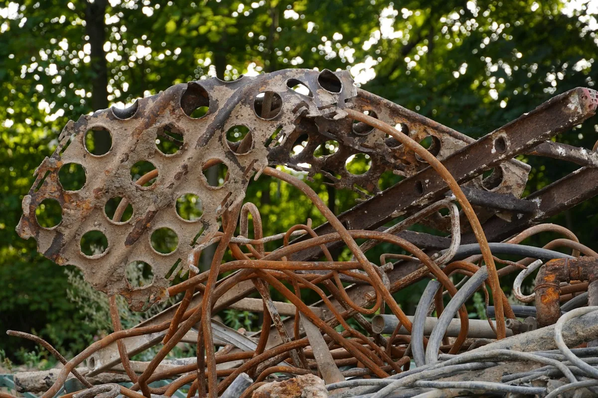

Scrap metal removal in Winnipeg
scrap metal
If it is all metal, it might be free
Appliances, lawnmowers, BBQs, bed frames, fencing, eavestrough, pipe, rims, filing cabinets and exercise equipment. Metal is the one category where the economics can run in your favour instead of ours.

We recover value on scrap at the yard. When a load is all metal and there is enough of it, that value can cover the job — so we can cut the price, or take it for nothing. A single rusty barbecue is not that load, and we will tell you so.
What we do
- Appliances, mowers, BBQs, bed frames, pipe, rims and eavestrough
- Full metal loads may be reduced or free — ask, it costs nothing
- Tires taken through the Tire Stewardship Manitoba network
- Loaded from the back yard, garage or alley, not just the curb
- Delivered to local scrap yards for recovery
Everything we take in this category
- Scrap metal
- If the whole load is metal and there is enough of it, the scrap value can cover some or all of the job. A single rusty item will not, but it costs nothing to ask.Also: Metal, Steel, Aluminium, Aluminum, Copper, Iron
- Lawnmower
- Drain the gas and oil first, or tell us you have not. The engine and deck go to scrap.Also: Lawn mower, Riding mower, Push mower, Lawn tractor, Weed trimmer
- Snowblower
- Same as a mower: drain the fuel. Most of it is steel.Also: Snow blower, Snowthrower
- BBQ
- We take the barbecue, but not the propane tank attached to it. Disconnect the tank first and take it to a propane exchange or a 4R Depot.Also: Barbecue, Grill, Gas grill, Charcoal grill, Smoker
- Bicycle
- Bikes in rideable condition go to reuse programs rather than scrap.Also: Bike, Kids' bike, Tricycle, Scooter
- Treadmill
- About 250 to 300 lbs, and the deck folds but the frame does not. A basement treadmill is a two-person carry with stair gear. The steel frame goes to scrap, so a load of gym equipment often prices like an all-metal load.Also: Treadmills
- Exercise equipment
- Mostly steel, which means it is heavy and it is scrap-yard material. Home gyms with a weight stack come apart before they move.Also: Elliptical, Stationary bike, Exercise bike, Home gym, Weight bench, Rowing machine, Stair climber
- Free weights
- Small, dense and heavy. Cast iron plates go straight to scrap.Also: Dumbbells, Barbells, Weight plates, Kettlebells
- Filing cabinet
- Empty the drawers first. A full four-drawer cabinet is more weight than two people should be carrying.Also: File cabinet, Metal cabinet, Metal shelving, Lockers
- Eavestrough
- Aluminium and steel both go to scrap.Also: Gutters, Downspouts, Metal roofing
- Radiator
- Old cast iron radiators are remarkably heavy for their size, and some pass 300 lbs. They go to scrap.Also: Cast iron radiator, Hot water radiator, Pipe, Copper pipe, Cast iron pipe
- Tires
- They go through the Tire Stewardship Manitoba network rather than the landfill. Tires on rims are fine; the rim is scrap anyway.Also: Tire, Car tires, Truck tires, Tires on rims, Winter tires
- Car parts
- Drained of fluids first. We take parts, not whole vehicles: a car needs a licensed auto recycler who can handle the fluids and the ownership transfer.Also: Auto parts, Engine parts, Rims, Transmission, Car doors
- Car battery
- Intact, upright and not leaking, and it goes to recycling. A cracked or leaking battery is hazardous and belongs at a 4R Depot, which takes them free.Also: Car batteries, Lead acid battery, Truck battery
Not on the list? Check everything we take, A to Z, or text us a photo and we will tell you straight.
What it costs
Mixed loads are priced normally. All-metal loads get assessed on what is actually in them — send a photo and we will tell you straight whether it is free, cheap or just ordinary.
Get a free quoteWe cannot take vehicles
A car needs a licensed auto recycler who can handle the fluids, the battery and the ownership transfer properly. We will point you to one rather than take it and create a paperwork problem for you.